Domain Adaptation for 3D Cell Segmentation
Instance segmentation of 3D cell microscopy data is crucial for studying embryonic development. Various deep learning models have been developed for this task, such as Cellpose (Stringer et al. 2021) and EmbedSeg (Lalit, Tomancak, and Jug 2022).
However, these models are only as good as the data they are trained on, and ground-truth annotations are difficult to obtain. One solution is to train models on existing ground truths from other datasets and experiments. However, differences in experimental protocols cause images obtained in separate environments to exhibit varying data distributions. A model trained on these differing source distributions may encounter difficulties generalizing to target distributions.
We explore various domain adaptation methods to solve this issue.
Background on 3D Cell Segmentation
3D cell segmentations identify and delineate individual cells (in other words, it is instance segmentation) within 3 dimensional microscopy data. Biologists use segmentations to quantitatively analyze cell shapes, cell morphology, and spatial relationships. 3D cell segmentations are crucial for studying embryonic development as they can help reveal the mutual effects of cellular structure (organization) and cell fate differentiation (Chalifoux, Avdeeva, and Posfai 2025).
Problem Overview
| 2 different volumes from a Train Distribution. Note, for all 3D volumes, we show a x-y, y-z, and x-z slice, obtained by slicing the corresponding center. | |
| 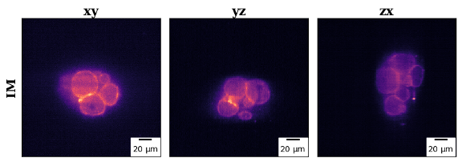 | 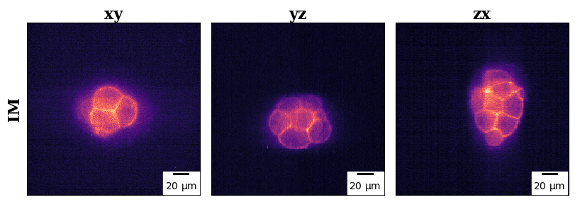 |
We illustrate the domain gap issue here. Shown above is an example of 2 volumes from a train distribution.
| Predicted test annotations where Train Distribution = Test Distribution | Predicted test annotations where Train Distribution ≠ Test Distribution |
| 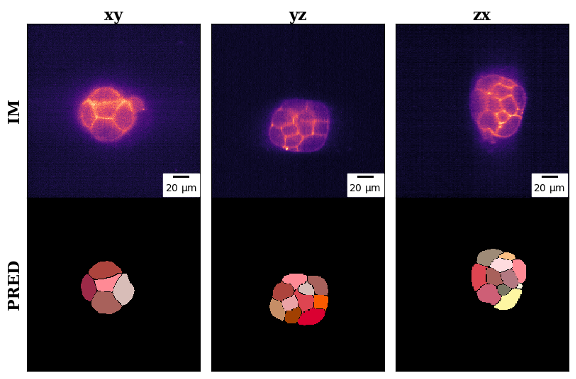 | 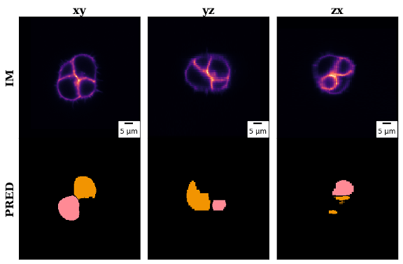 |
We train a 3D segmentation model on the above train distribution and evaluate it on 2 test distributions: 1 test distribution that is equivalent to the train distribution and 1 test distribution that is different to the train distribution. We observe that if the test and train distributions are equal, we obtain good predicted segmentations. However, if the test and train distributions are not equal, the predicted segmentations are poor.
EmbedSeg
We use the EmbedSeg model for all experiments. We choose EmbedSeg because it processes 3D data directly, unlike other models that consider 2D slices of a 3D volume (Lalit, Tomancak, and Jug 2022).
In EmbedSeg, each voxel predicts a spatial embedding (a unique voxel location that represents an object this voxel belongs to). Each segmentation mask consists of all voxels whose embeddings belong to the same cluster of embeddings. The model predicts clustering bandwidths in x, y, z dimensions and a seediness score (which indicates the likelihood a voxel represents an object instance) to help cluster voxels.
Datasets
We use the following 3D cell microscopy datasets.
Source (Training) data: {Mouse embryo A, B from the Hiiragi group}
- 88 volumes across developmental stage
- voxel size: (1.295, 0.416, 0.416) μm
Target (Testing) data: {Mouse-Organoid-Cells-CBG}
- 84 volumes across developmental stage
- voxel size: (1.0, 0.1733, 0.1733) μm
Transfer Learning
The first domain adaptation method we consider is transfer learning.
Transfer learning is a machine learning technique in which the knowledge a model gains from 1 dataset (or task) is used to improve performance on a related dataset (or task). Transfer learning is particularly useful when the target data does not contain a sufficient number of labelled samples (Zhuang et al. 2020).
To create our baseline model, we train an EmbedSeg model on the source data for 400 epochs. To create our fine-tuned model, we first train an EmbedSeg model on the source data (mouse embryo A) for 200 epochs. We then fine tune the model on the target data for another 200 epochs. We decay the learning rate by linearly changing a small multiplicative factor throughout the 400 epochs. All layers are allowed to train during fine tuning.
| Baseline | Fine-tuned with transfer learning |
| Test IOU (Intersection over Union) | |
| 0.656467 | 0.878288 |
| Predicted Test annotations | |
| 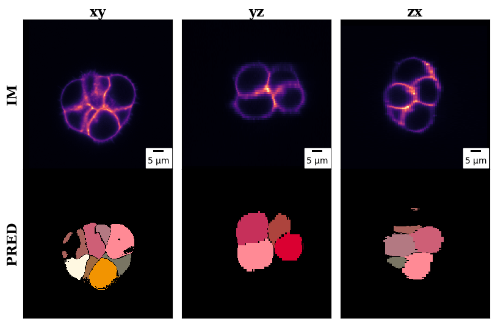 | 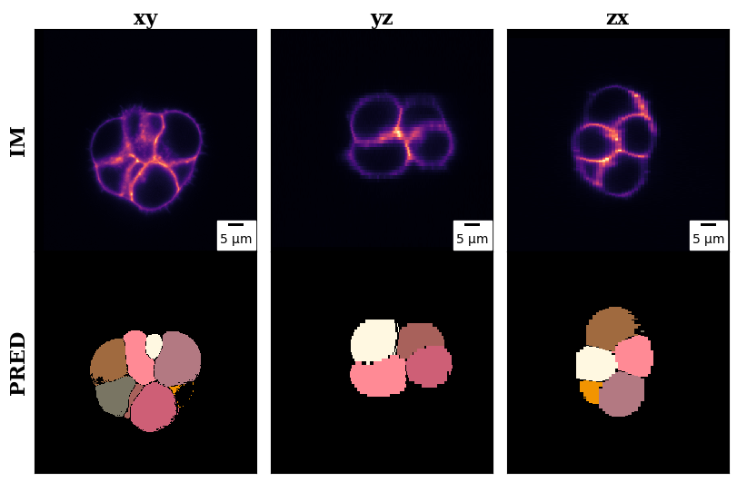 |
As shown by results above, a model fine-tuned with transfer learning greatly outperforms a baseline model just trained on source data. However, a drawback of transfer learning is that it requires ground truth segmentations for the target dataset, which is expensive to obtain even when not many samples are needed. The next domain adaptation method we consider does not require any ground truth segmentations for the target dataset.
Adversarial Domain Adaptation
A common approach to domain adaptation is to learn a neural transformation that maps different domains to a common feature space. Adversarial domain adaptation methods do so by using adversarial learning to minimize the difference between features extracted from source and target domains, allowing a model trained on the source domain to generalize better to the target domain. Specifically, a domain discriminator network tries to distinguish features from the source domain and features from the target domain, and a feature extractor network tries to generate features that confuse the discriminator network. If trained properly, this adversarial learning objective results in domain invariant features (Ganin et al. 2016).
Our framework for adversarial domain adaptation is based on Adversarial Discriminative Domain Adaptation (Tzeng et al. 2017). As shown in the above figure, a source encoder is first pre-trained on the source domain. Next, a target encoder is trained such that a discriminator network cannot distinguish between features from the source encoder and target encoder. During evaluation, input from the target domain is mapped to the common feature space and the source classifier classifies the mapped features.
For adversarial domain adaptation in the context of 3D cell segmentation, we make some changes. We use 1 encoder for both the source and target domains as most domain adaptation methods seem to use a shared encoder for source and target domains–doing so did not have a meaningful difference in practice.
In the training loop, EmbedSeg’s encoder and decoder are first trained with source data. Next, a discriminator network is trained to distinguish between features extracted from the source domain and features extracted from the target domain. Finally, EmbedSeg’s encoder (the feature extractor) is trained with backward propagation from the discriminator’s error function: the discriminator is fed “fake” labels for target features. This final step is crucial as it motivates the encoder to generate domain invariant features.
Code for adversarial domain adaptation for 3D cell segmentation can be found here.
During our experiments with adversarial domain adaptation, we found some key insights that may be of use to anyone attempting similar methods. First, the discriminator network needs to be complex enough for the model to successfully distinguish between domains; we used a 4 layer multilayer perceptron. Next, while EmbedSeg was trained with a batch size of 4, we found that domain adaptation (discriminator training and encoder fine-tuning) should be done with a larger batch size (we used 128)–with a small batch size, the discriminator could not identify meaningful differences between domains.
| Baseline | Adversarial Domain Adaptation |
| Test IOU (Intersection over Union) | |
| 0.656467 | 0.734249 |
| Predicted Test annotations | |
| 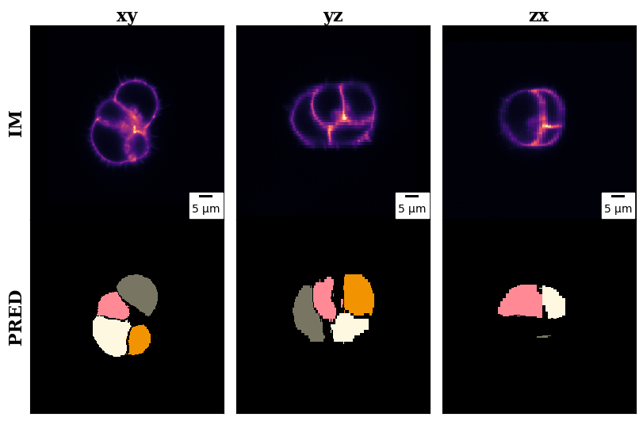 | 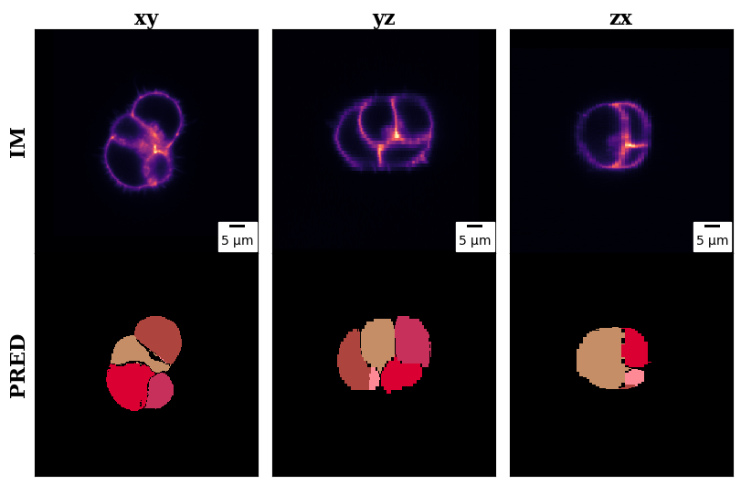 |
We see that a domain adapted model outperforms a baseline model just trained on source data. Unfortunately, domain adaptation did not yield good results compared to transfer learning. We hypothesize that this may be because fine-tuning the encoder to generate domain invariant features might cause the extracted features to deviate from those optimal for the original cell segmentation task.
The final domain adaptation method we consider not only does not require any ground truth segmentations for the target dataset, but also has the advantage of increasing the number of useful training samples (useful in that the training samples all follow the same data distribution).
Style Transfer
Style transfer fuses the content of one image with the style (e.g., colors, textures, and noise) of another. By transferring the same style to the source domain and target domain, a model trained on the source data can generalize to the target data without needing ground truth for the target data, i.e. zero shot segmentation (Jing et al. 2019). Style transfer could help increase the number of useful training samples for a target dataset (thus leading to better generalization) as multiple different datasets can all be transferred to the same target style.
Inspired by work on zero-shot segmentation in CellStyle (Yilmaz et al. 2025), we adapt a style transfer method based on a large pre-trained latent diffusion model, StyleID (Chung, Hyun, and Heo 2024). The advantage of this method is that it does not require inference-stage optimization.
As shown above, the method works by substituting the key and value of a content image with those of a style image in self-attention (of the U-Net).
The architecture of a latent diffusion model, the model used in StyleID, is shown above. Self-attention layers added to the U-Net allow each region of an image to weigh and combine information from all other regions.
Because there are no publicly available 3D large-scale pre-trained diffusion models, we adapt this 2D method to 3D. As shown in the figure above, we transfer each slice of the 3D cell microscopy volume independently before concatenating them to obtain the style-transferred 3D volume. Note, we transfer both source and target data to a common style. We found that doing so works better in practice (compared to just transferring either the source or target).
3D style transfer code can be found here.
We provide visualizations of the style transfer process below.
| Style to transfer (Mouse embryo A from Hiiragi group). 3 volumes are shown to illustrate the different stages of cell development. | ||
| 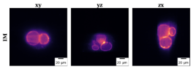 | 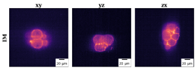 | 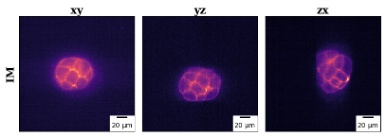 |
We choose to transfer the style of the above distribution. Note, we choose 1 x-y slice from the entire set of 3D volumes as the style to transfer.
| Original target data (Top) | Original source data (Top) |
| Style transferred target data (Bottom) | Style transferred source data (Bottom) |
| 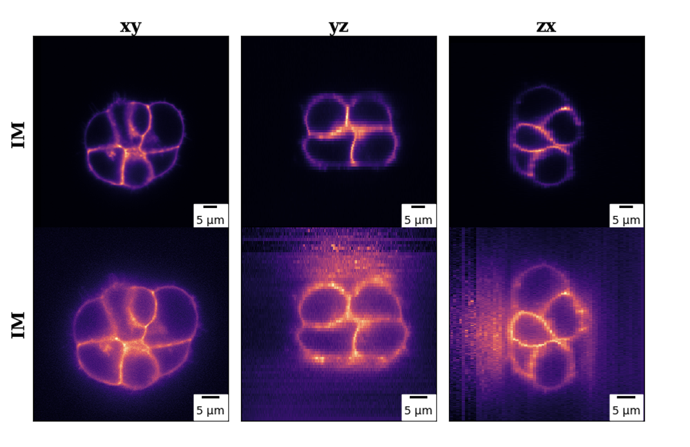 | 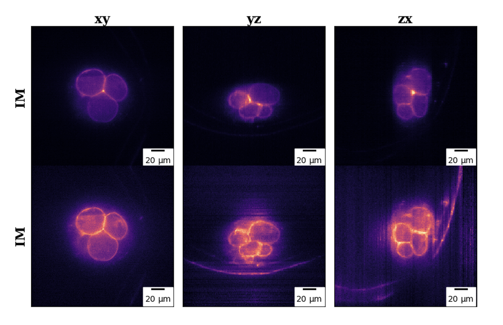 |
Above are 3D microscopy volumes before and after they were style transferred.
| Approach \ Dataset | Small target dataset | 1 source dataset | 2 source datasets | 1 source dataset + fine tuned on small target dataset | 2 source datasets + fine tuned on small target dataset |
|---|---|---|---|---|---|
| Non-Style Transfer | 0.62983 | 0.65131 | 0.69955 | 0.77715 | 0.80361 |
| Style Transfer | 0.57766 | 0.69545 | 0.72947 | 0.78805 | 0.79788 |
From the above results, we see that when a model isn’t trained on the target data, training a model on style transferred data leads to improved performance.
| Predicted segmentations from model trained using 1 non-style transferred small target dataset | Predicted segmentations from model trained using 2 style transferred source datasets |
| 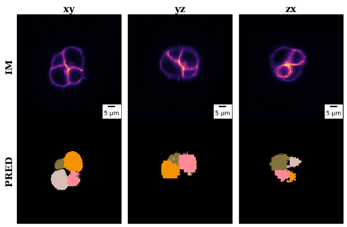 | 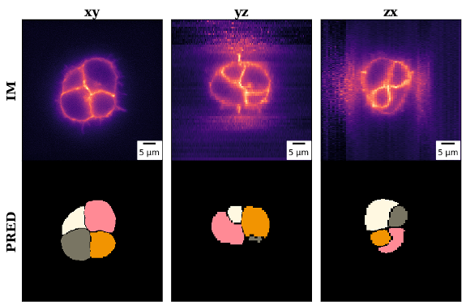 |
Additionally, we qualitatively confirm these results here. We find that 3D style transfer can improve cell segmentation accuracy, especially when ground truth annotations for target data are scarce or unavailable. However, style transfer only improves segmentation when cells are visually similar. We also find that style transfer introduces noise for slices that do not contain any cells. This could be resolved by injecting different style features for different sections of a 3D volume.
Conclusion and Future Work
We explored 3 different domain adaptation methods for 3D cell segmentation. We find that all 3 methods have benefits for specific situations. Transfer learning will lead to the best performance when ground truth segmentations for the target dataset are available. On the other hand, domain adaptation and style transfer will lead to the best performance when ground truth segmentations are unavailable.
We believe that style transfer may be the optimal choice for 3D cell segmentation as style transfer could be used to increase the number of useful training samples. We hope to pursue future work in this idea. Future work could also include using style transfer to build large, pre-trained 3D segmentation models that can be immediately applied to newly imaged cells.
One limitation of our work is that our predicted segmentations are not good enough to be used by biologists without additional corrections. However, we believe this to be the result of the training data quality.
The poster can be found here.
Code repository: https://github.com/donghyunkm/3DCellSegDA
We thank the Hiiragi Group for providing mouse embryo data and annotations. We also thank Alf Honigmann and Anna Goncharova for the Mouse-Organoid-Cells-CBG data and annotations.
We thank Hayden Nunley, David Denberg, Lisa Brown, and Andrew Lu for helpful feedback and discussions.